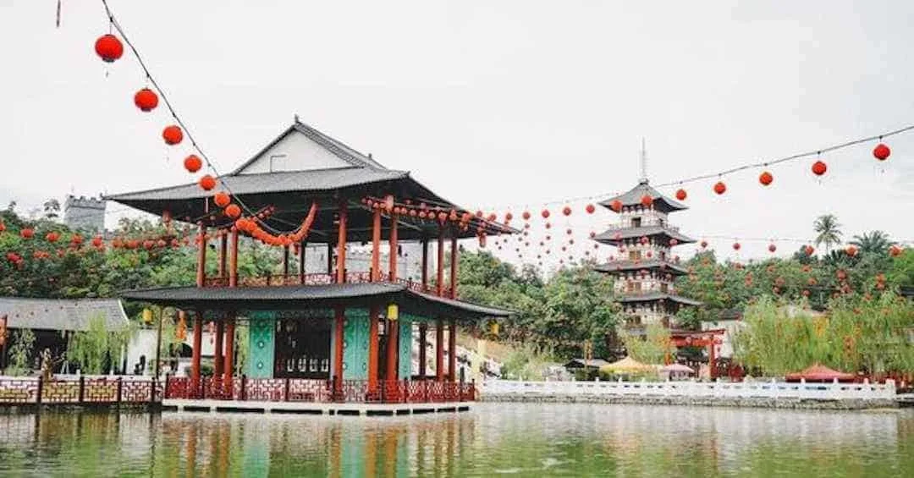

kumpulan foto pilihan yang menampilkan objek wisata, tradisi, kuliner, di Provinsi Pekan Baru.
klik pada foto untuk melihat lebih jelas.

Bakar Tongkang merupakan tradisi masyarakat Tionghoa di Kota Bagansiapiapi, Kabupaten Rokan Hilir, Provinsi Riau. Tradisi Bakar Tongkang merupakan acara tahunan terbesar di Kota Bagansiapiapi. Bakar Tongkang merupakan acara tahunan yang mampu menarik wisatawan, baik dalam negeri maupun luar negeri.
Artikel ini telah tayang di Kompas.com dengan judul "Mengenal Bakar Tongkang Riau: Sejarah, Tujuan, dan Prosesi".

Pacu jalur (juga dieja sebagai Pachu jalugh, atau Patjoe djaloer) adalah perlombaan tradisional dayung perahu atau sampan atau kano terbuat dari kayu gelondongan utuh yg dibentuk menjadi perahu khas Rantau Kuantan yang berasal dari kabupaten Kuantan Singingi Provinsi Riau Indonesia
Gulai Cipuik, atau lebih dikenal dengan Gulai Siput, adalah salah satu makanan adat tradisional Riau, termasuk di Pekanbaru, yang terbuat dari siput dan dimasak dengan bumbu gulai khas Melayu. Makanan ini menawarkan sensasi unik dengan tekstur siput yang kenyal dan rasa bumbu rempah yang kaya
Gulai Ikan Patin merupakan sajian kuliner khas Riau. Gulai Ikan Patin menjadi makanan yang segar dan nikmat kala dimakan siang hari. Makanan yang satu ini wajib dicoba. Diolah secara higeinis dan bersih, ternyata juga digemari wisatawan asing.

Tari Zapin adalah sebuah tarian tradisional Melayu yang berasal dari Riau. Tarian ini memiliki akar budaya Arab dan dibawa masuk ke Nusantara oleh pedagang dan penyebar agama Islam. Meskipun demikian, Tari Zapin Matahari telah mengalami akulturasi dengan budaya Melayu,
sehingga menjadi ciri khas tersendiri.
Pemuras adalah senapan isi-dari-moncong dengan ceropong pendek berkaliber besar yang mengembang di moncong dan diisi dengan peluru bola timah. Pemuras merupakan bentuk awal senapan yang digunakan bagi tentara dan kegunaan pertahanan.
Pemuras adalah senapan isi-dari-moncong dengan ceropong pendek berkaliber besar yang mengembang di moncong dan diisi dengan peluru bola timah. Pemuras merupakan bentuk awal senapan yang digunakan bagi tentara dan kegunaan pertahanan.
Lokasi Museum Sang Nila Utama berada di jantung Kota Pekanbaru. Museum Sang Nila Utama merupakan tempat wisata sejarah, budaya, dan pendidikan di Pekanbaru. Ada beragam benda-benda bersejarah terutama yang berhubungan dengan budaya Melayu, seperti pakaian adat, permainan tradisional, artefak, dan lain sebagainya.
Artikel ini telah tayang di Kompas.com dengan judul "Museum Sang Nila Utama di Riau: Daya Tarik, Koleksi, dan Sejarah"

Asia Heritage adalah sebuah kawasan wisata yang bertujuan untuk menggambarkan keindahan dan keragaman budaya dari berbagai negara di Asia. Terletak di Jalan Yos Sudarso, kawasan ini memiliki luas lebih dari 4 hektare dan mencakup beragam bangunan, taman, dan fasilitas yang mengangkat nilai-nilai budaya, seni, dan sejarah.
Taman Rekreasi Alam Mayang Pekanbaru adalah salah satu tempat wisata alam yang terletak di jalan imam Munandar Km 8, kelurahan Tangkerang, Kecamatan Tenayan Raya, kota Pekanbaru, Riau. Alam mayang dikelilingi oleh keindahan alam yang menyejukkan mata, taman ini menyajikan pengalaman yang unik bagi pengunjungnya"
Kawah Biru dikenal dengan airnya yang berwarna biru cerah, yang terbentuk dari hasil penambangan tanah liat di daerah tersebut. Air yang jernih dengan warna biru kehijauan menciptakan pemandangan yang sangat kontras dengan lingkungan sekitar yang berwarna cokelat kemerahan, memberikan kesan surreal dan magis bagi siapa saja yang melihatnya.

Rumah adat di Pekanbaru, Riau, yang paling terkenal adalah Rumah Selaso Jatuh Kembar, juga dikenal sebagai Balai Salaso Jatuh. Rumah ini bukan untuk tempat tinggal, melainkan untuk pertemuan adat, musyawarah, dan kegiatan lainnya

Baju Kurung Cekak Musang adalah salah satu pakaian adat Riau, khususnya di Pekanbaru, yang dikenakan oleh pria untuk acara resmi. Pakaian ini memiliki ciri khas berupa kerah tegak (cekak) dan tiga saku di bagian depan. Baju Kurung Cekak Musang juga sering dipadukan dengan kain samping (sarung yang dililitkan di pinggang) dan songkok (peci).

Alat musik tradisional Riau yang terkenal dan sering dikaitkan dengan Pekanbaru adalah gambus. Gambus adalah alat musik petik khas Melayu yang memiliki bentuk mirip gitar, namun dengan bagian badan yang lebih bulat dan leher yang lebih panjang. Gambus sering dimainkan dalam berbagai acara adat dan pernikahan di kalangan masyarakat Melayu. .
Aksara yang digunakan di Pekanbaru, Riau, adalah aksara Jawi atau Arab Jawi. Ini adalah bentuk modifikasi dari aksara Arab yang digunakan untuk menulis bahasa Melayu, termasuk bahasa Melayu Riau yang digunakan di Pekanbaru. Aksara ini digunakan secara tradisional untuk menulis berbagai teks, termasuk dokumen resmi dan catatan sejarah, serta dalam seni dan budaya lokal.

Karya seni di Pekanbaru, Riau, mencakup berbagai bentuk, mulai dari seni rupa, seni pertunjukan, hingga seni tradisional. Anjungan Seni Idrus Tintin adalah salah satu tempat yang terkenal untuk pertunjukan seni dan budaya di Pekanbaru. Selain itu, Galeri Hang Nadim juga menjadi pusat kegiatan seni rupa, termasuk pameran seni rupa kontemporer.